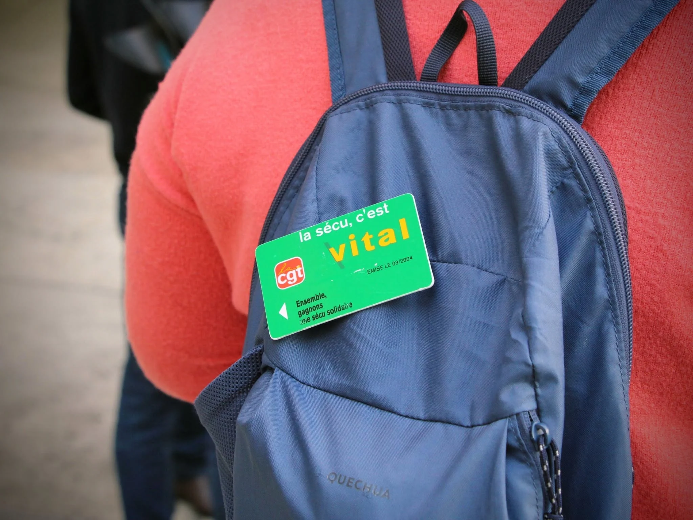
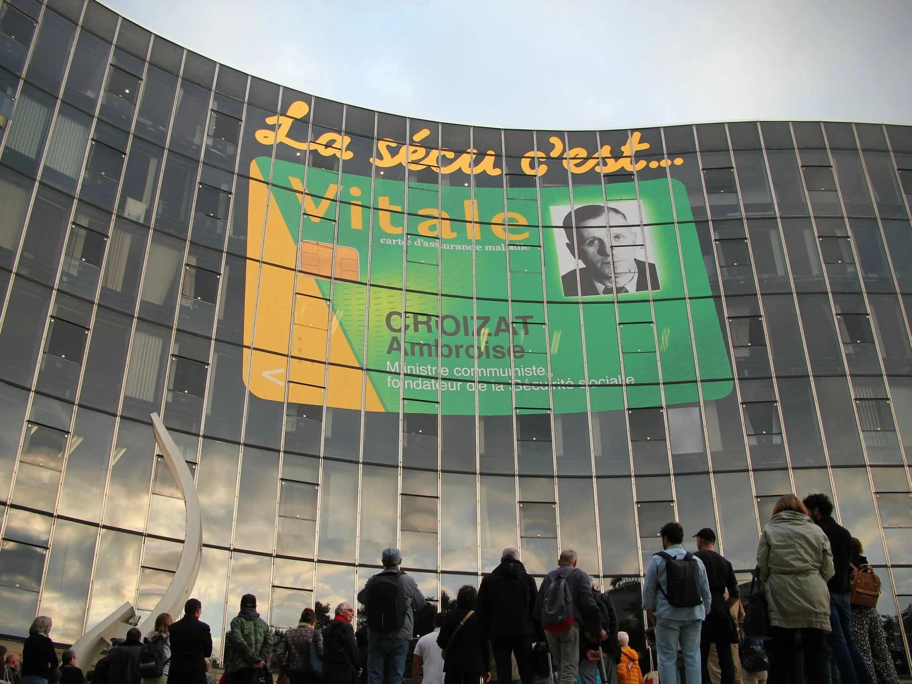

Publication relayée par le PCF 79
« Vive la sociale ! » Une soirée en hommage à Ambroise Croizat
Date de mise à jour indiquée par Facebook · 30 septembre 2025
Texte de la publication · PCF national
Vive la sociale !
C’est parti pour la soirée événement au siège du PCF en présence de Fabien Roussel et Pierre Caillaud-Croizat, petit fils d’Ambroise Croizat, à qui nous rendons hommage ce soir ainsi qu’à tou·tes celles et ceux qui se sont battus pour faire vivre concrètement la France des Jours heureux.


Sources
PCF national · publication relayée par le PCF 79 · bibliothèque Facebook · AR-0002-FB-01000
À lire aussi · Sécurité sociale. Pierre Caillaud-Croizat défend le rôle de Croizat et de la CGT